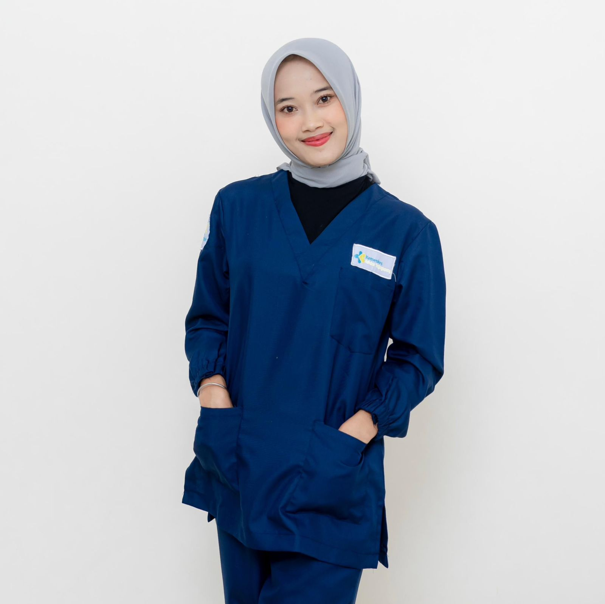

Bersama Wujudkan Generasi Sehat Tanpa Cacingan
SehatBebasCacing adalah inisiatif edukatif untuk meningkatkan kesadaran masyarakat akan pentingnya kebersihan dan pencegahan penyakit cacingan. Mari bersama menjaga kesehatan keluarga dengan pola hidup bersih dan perilaku sehat.
Poster Edukasi Cacingan
Yuk, pahami pentingnya menjaga kebersihan dan mencegah cacingan melalui poster-poster edukatif berikut.
.png)


Kenali dan Cegah Cacingan Sejak Dini
Pahami gejala, penyebab, dan cara pencegahan cacingan agar keluarga tetap sehat dan terlindungi.

Kenali Sejak Dini: Tanda dan Gejala Cacingan yang Sering Diabaikan
Cacingan sering dianggap sepele, padahal bisa menyebabkan gangguan penyerapan gizi, anemia, hingga hambatan pertumbuhan anak. Yuk, kenali gejala awalnya agar bisa dicegah lebih dini!
Baca SelengkapnyaJangan Salah Paham! Ini Fakta dan Mitos tentang Cacingan
Tahukah kamu? Lebih dari 1,5 miliar orang di dunia terinfeksi cacing yang ditularkan melalui tanah. Yuk, cari tahu mana yang fakta dan mana yang hanya mitos seputar penyakit ini.
Baca Selengkapnya
Sudah Saatnya Anda Minum Obat Cacing! Panduan Lengkapnya di Sini
Obat cacing bukan hanya untuk anak-anak! Pelajari waktu dan cara yang tepat dalam mengonsumsi obat cacing agar keluarga Anda terhindar dari infeksi cacingan.
Baca Selengkapnya
Segera Bertindak! Langkah Pertama Saat Terindikasi Risiko Tinggi Cacingan
Cacingan bisa menyerang siapa saja, terutama yang kurang menjaga kebersihan diri. Ketahui tindakan awal yang tepat untuk mencegah dan mengendalikan infeksi sejak dini.
Baca Selengkapnya
Yuk Kenali, Kebiasaan Sehari-hari yang Bisa Melindungimu dari Penyakit Cacingan
Kebiasaan sederhana seperti mencuci tangan dan menjaga kebersihan kuku bisa mencegah penularan cacingan. Pelajari cara mudah memutus rantai penyebarannya di sini.
Baca SelengkapnyaCek Yuk
Apakah anda cacingan atau tidak?
Tentang Kami
Kami bekerja bersama untuk menyebarkan kesadaran tentang pentingnya menjaga kesehatan dari cacingan
Calista Aninda Wulandari
Bandar Lampung, 30 Agustus 2005
Perumahan Griya Sukarame, Bandar Lampung
Anjani Putri Azzahra
Way Serdang, 28 Mei 2006
Hajimena, Jl Sebiyay, Natar, Bandar Lampung
Finkan Desta
Kotabumi, 4 Desember 2005
Perumahan Taman Raya Permai

Silfi Aulia Putri
Lampung Barat, 20 Maret 2006
Sabah Balau Griya Abadi, Tanjung Bintang